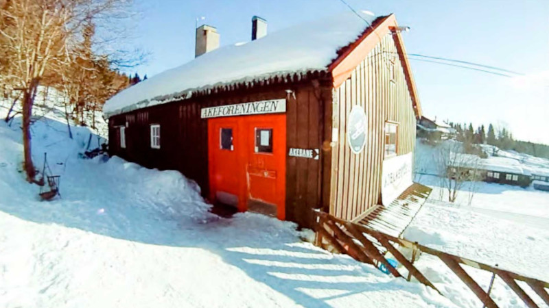
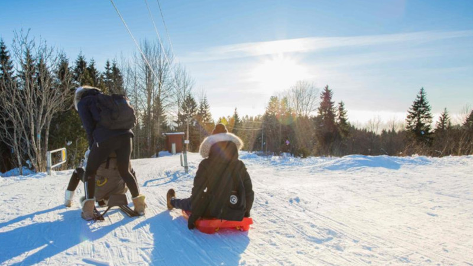
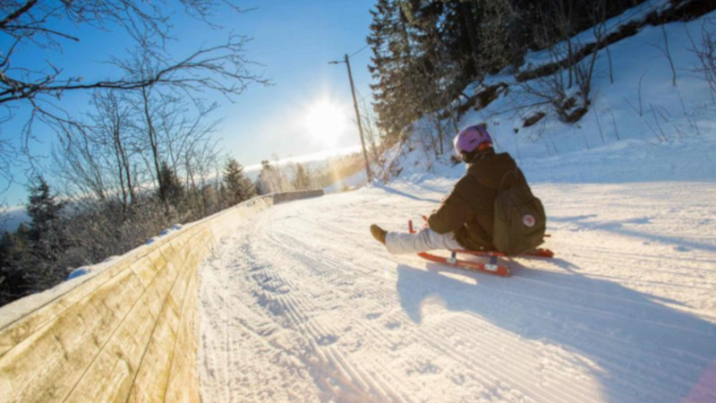

Korketrekkeren
Located in the capital of Norway, Oslo. Korketrekkeren is a 2,00 meters long toboggan run that starts at Frognerseteren and ends at Midstuen metro station.
If you're going to visit Oslo, expecially with childern, we highly reccomend to take the metro up the mountain to experience Korketrekkeren.



Hint: You can click and hold on a image to make it bigger